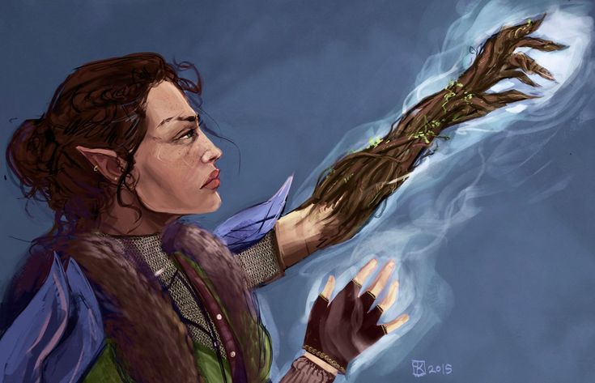
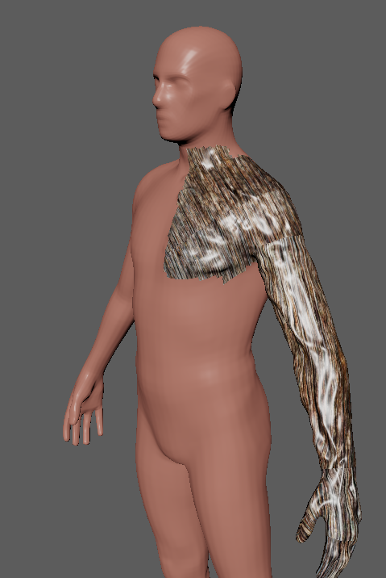

Artifacts

The prophecy
“The Princess who walks between shadow and steel shall wear a crown unseen, and kings will kneel where she stands.”
Xavier's Wodden Arm
Reference Photo:


The wooden arm that magically reacts to the princess is not just for show and has a deeper meaning. The branch that was grown into the arm is actaully a branch that was found near the dead Queen's gravestone. When the curious Lily asked Meave to help, Meave told Lily that she could by finding her a branch in the woods. A simple task for a little girl to fetch. When they went out toegther, Meave was confused on why she was passing so many branches but then relized that they were on the path to the graveyard, as Lily grabbed a branch that fell off of a small tree in a pot on her mother's gravestone. Meave didn't know about this at the time because she was distraced by whispers in the graveyard saying "I will be by your side".
Whisper of Honor (Legendary Rapier)
Prince Caelum's rapier that he selected when being promoted to Captain of the royal gaurd in the Kingdom. During the ceremony there was 5 rapier's held out by guards for the Prince to choose from. everyone was very masterfuly crafted by the blacksmith of the kingdom, but one rapier stood out from the rest. A blade that has a crown as it's pommel, the grip with small rivets for better grip, and a Quillon shaped almost like a clover. This rapier called to him, and so he chose this rapier as his gift of becoming captain.